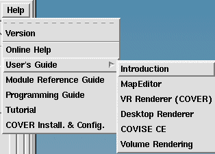

| click below: | or use the Help button: |
COVISE Tutorial COVISE User's Guide COVISE User's Guide, chapter COVISE CE (Collaborative Engineering) and N'S³ (Conference Room Interface) (optional) COVISE Module Reference Guide COVISE Programming Guide COVISE Installation and Configuration (general) COVER Installation and Configuration |
 |
You can get Online Help
COVISE VR and CE User's Guide, chapter COVER (VR Renderer) or COVER Installation and Configuration COVISE VR and CE User's Guide, Appendix: Volume Rendering in Covise COVISE VR and CE User's Guide, chapter COVISE CE , section New Collaborative Covise (Daemon) |